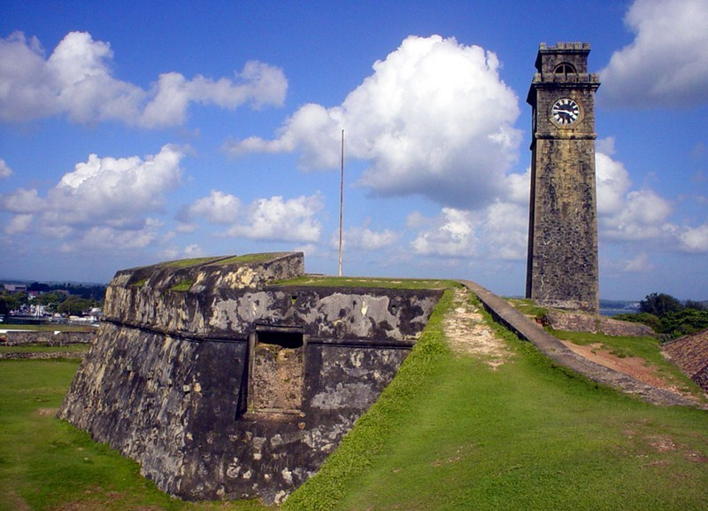

LUCKY TUNA RESTAURANT
Home
Menu
Login
About
Inquiries
Visiting Places
Visiting Places
Unawatuna Beach
Jungle Beach
Galle Dutch Fort
Thalpe Beach
Unawatuna Beach
Unawatuna Beach is a picturesque semi circular bay beach that streches no more than one kilometer.Unawatuna too is fringed by lush groves of coconut palm trees.
Read More
Jungle Beach
Jungle beach is a pretty bay just west of unawatuna. There are a couple of slim-line sandy coves here,some snorkelling offshore and a cafe.It's a pleasant, hilly 2km walk from unawatuna.
Read More

Galle Dutch Fort
Galle Fort in the bay of Galle on the southwest coast of Sri Lanka,was built first in 1588 by the portuguese,then extensively fortified by the Dutch during the 17th century from 1649 onwards..
Read More
Thalpe Beach
Nestled away from the hustle and bustle of the major towns in the southern coastal belt, Thalpe is a quiet town,known for its mesmerising unspoilt beaches. A short driven from Galle.
Read More